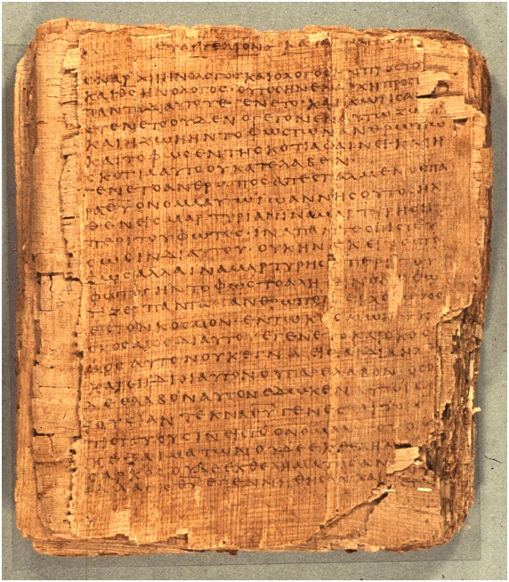

Bodmer Papyrus P66

- Find Name
- Bodmer Papyrus P66
- Description
- Bodmer Papyrus P66 (P. Bodmer II) is a nearly complete Greek codex of the Gospel of John, found in 1952 at Jabal Abu Mana near Dishna in Egypt. Its original editor dated it to about AD 200 on handwriting; Herbert Hunger argued for AD 100-150, while Brent Nongbri's broader study concluded the early or middle 4th century is more likely. The codex has 39 folios (156 pages), with the first 26 leaves almost fully intact. It is now housed at the Bibliotheca Bodmeriana in Cologny-Geneva, with one leaf in Cologne.
- Historical Period
- Early Church period
- Evidence Class
- Direct
- Interpretations
- P66 is one of the oldest well-preserved New Testament manuscripts and a key witness to the Alexandrian text of John, very close to P75 and Codex Vaticanus. Like the other early papyri of John, it omits the story of the woman caught in adultery (John 7:53-8:11), marking the omission with a dot and space, which demonstrates that the passage was absent from the earliest surviving copies of John. Its date range is genuinely disputed, so any single date should be given with its alternatives rather than stated as settled.
- Alternative Names
- P. Bodmer II
- Related Places
- Related Books
- Related People
- Scripture Illuminated
- Biblical Significance
- It is the oldest nearly complete Gospel of John, anchoring the text of John within about a century of its writing and confirming the early absence of the adulteress passage.
- Artifact Date
- c. AD 200 (disputed: AD 100-150 to 4th century proposed)
- Current Location
- Bodmer Library, Cologny-Geneva, Switzerland (one leaf in Cologne, Germany)
- Date Discovered
- 1952
- Discovery Location
- Jabal Abu Mana, Egypt
- Timeline Era
- Early Church
Awaiting Review Not yet checked against scholarly sources. Treat its claims as provisional until this entry is reviewed. About verification
Last reviewed: not yet reviewed